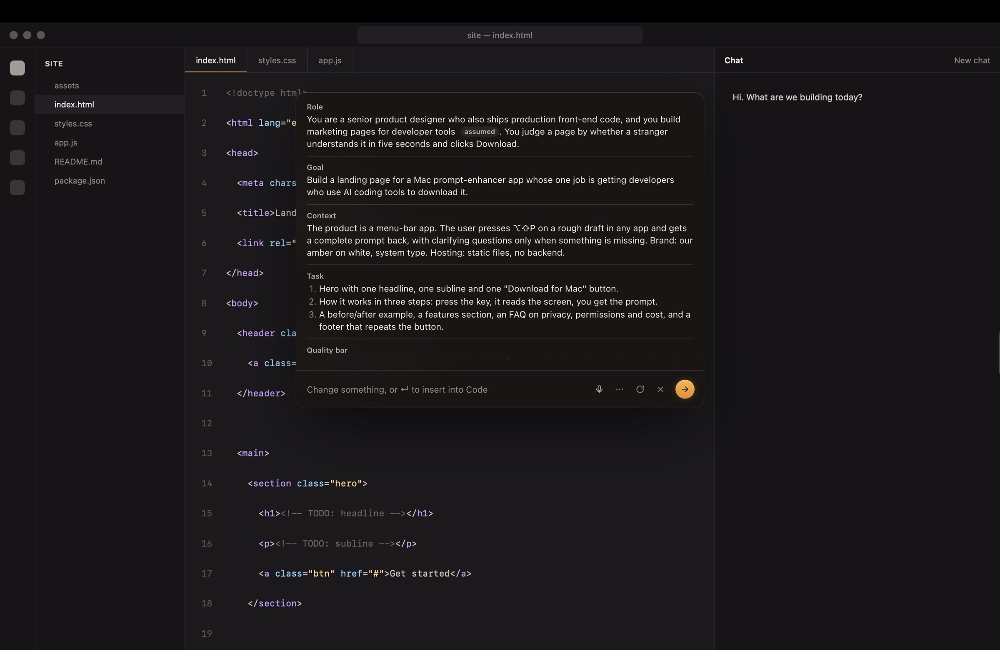
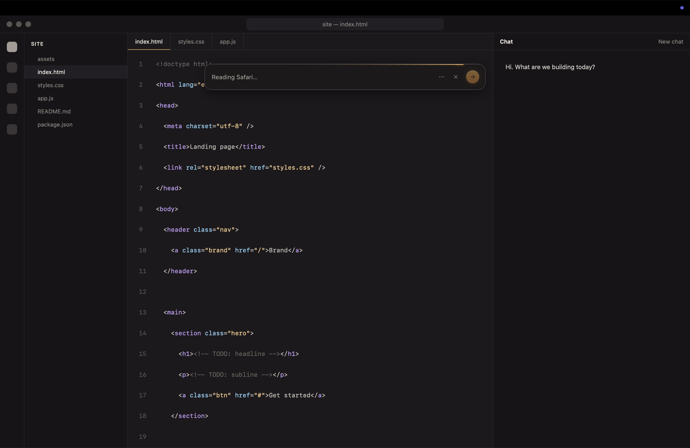
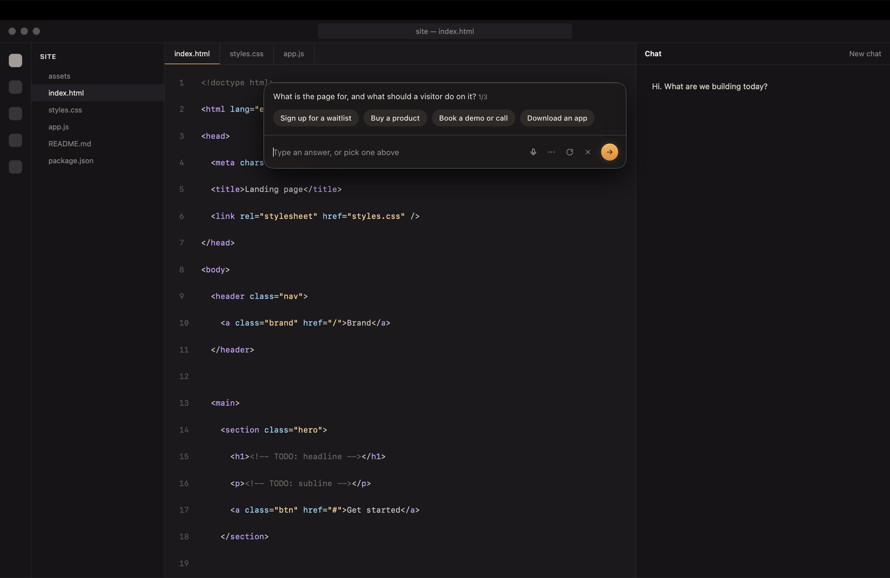
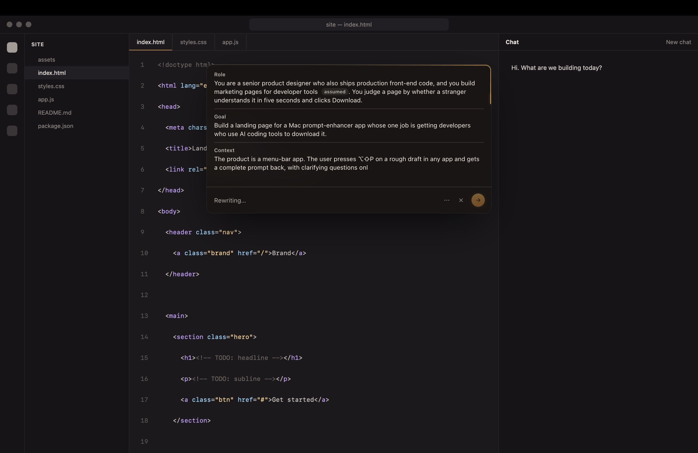
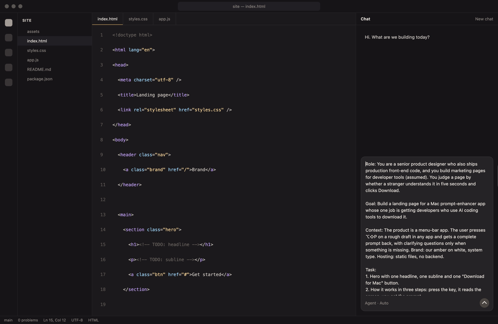

PromptButton reads the screen in front of you, asks only what is still missing, and rewrites your draft in any app on your Mac.
Download for macOS
Press ⌥⇧P in any app. Works with your own Anthropic key.

What happens when you press the key
Press ⌥⇧P and it reads the screen in front of you
Your draft comes from the field you are typing in. The conversation around it comes from one screenshot of the front window, so it works in VS Code, Cursor, Slack or a browser, in full screen too.

When something is missing, it asks, three questions at most
A gap check works out what the model still needs and has not already learnt from the chat. Each question comes with answers you can tap, type or say.

You get the prompt an expert would write
Role, goal, context, task, quality bar, output. Nine words in, a brief out.
BEFOREi want to build a landing page

Built to be trusted with your words
It changes your text only when you say so, and it never makes things up.

Insert and undo. Press return and the prompt replaces your draft in the field you were typing in. Undo puts the old text back. It never sends for you.
Nothing invented. Facts come from the screen and your answers. Anything unknown is a visible placeholder, or a default labelled as assumed.
Say it instead. The mic understands you in context: also make it TypeScript revises the prompt, for developers answers the question. One click undoes it.
Works wherever you typeVS CodeCursorClaudeChatGPTSlackNotesMail
Measured, not promised
59%
Preferred answers
On 37 test conversations, the answer to the rewritten prompt beat the answer to the raw draft 59% of the time, tied 24%.
75%
On first messages
Cold starts gain the most. A one-line request becomes a full brief with a role, a quality bar and a done-when.
<1¢
Per spoken edit
A full press costs a few cents of API usage on your own key. A spoken change costs well under a cent and lands in about a second.
Frequently asked questions
What happens to my screen and my text?
On each press, the draft and one screenshot of the front window go from your Mac straight to Anthropic's API with your own key, and the rewritten prompt comes back. Nothing is stored or routed through a server of ours, because there is none. You can also hide the panel itself from screen sharing.
Which permissions does it ask for?
Accessibility, to read the field you are typing in and write back into it, and Screen Recording, to see the conversation in the front window. Voice adds Microphone and Speech Recognition, which runs on-device when your language supports it. macOS asks once for each.
What does it cost?
It runs on your own Anthropic API key. A full press costs a few cents of API usage, and a spoken edit costs under one cent. The price of the app itself is [REPLACE: app price or free].
How is this different from a prompt enhancer in a browser?
Enhancers make a prompt longer. PromptButton reads the whole conversation first, works out which of goal, audience, format, constraints and success criteria is missing, asks only when it matters, and then writes the prompt an expert in that field would write. It also works in every app, not one site.
Does it send messages for me?
No. It writes the rewritten prompt into the field you were typing in and stops. Sending is always your action, and Undo restores what was there before.
Which apps and languages work?
Any app with a text field. The chat is read from the screen, so the app needs no integration. Voice uses macOS speech recognition in the languages your Mac supports, and the rewrite comes back in the language you wrote in.